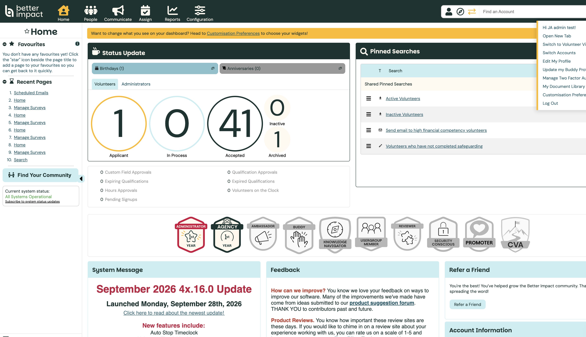
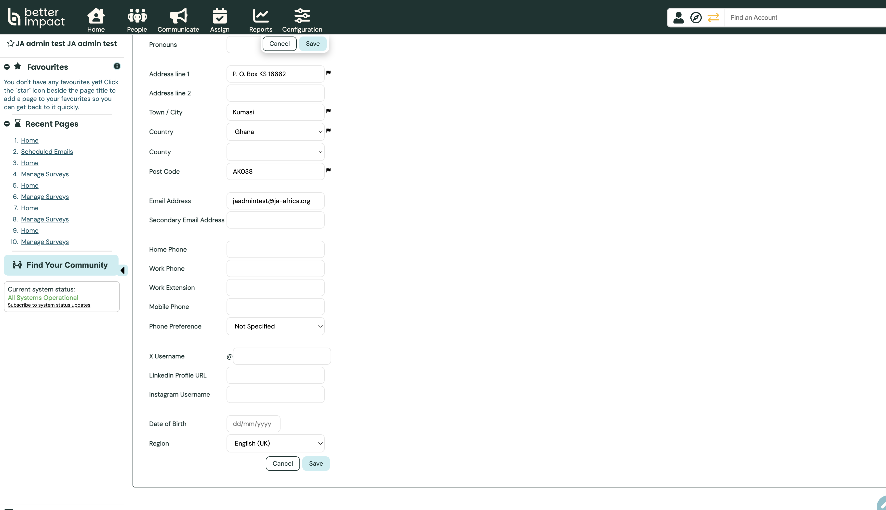
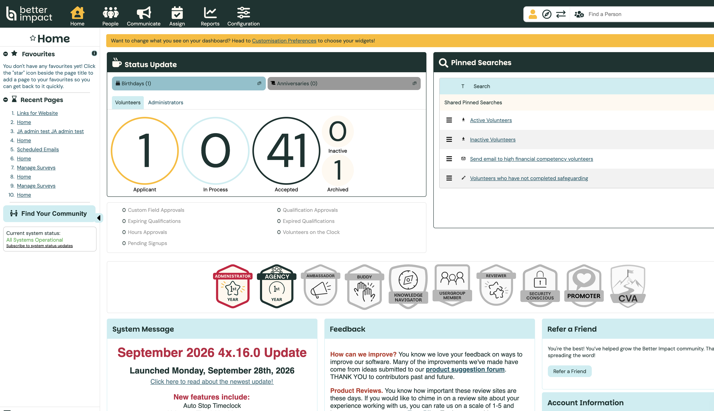
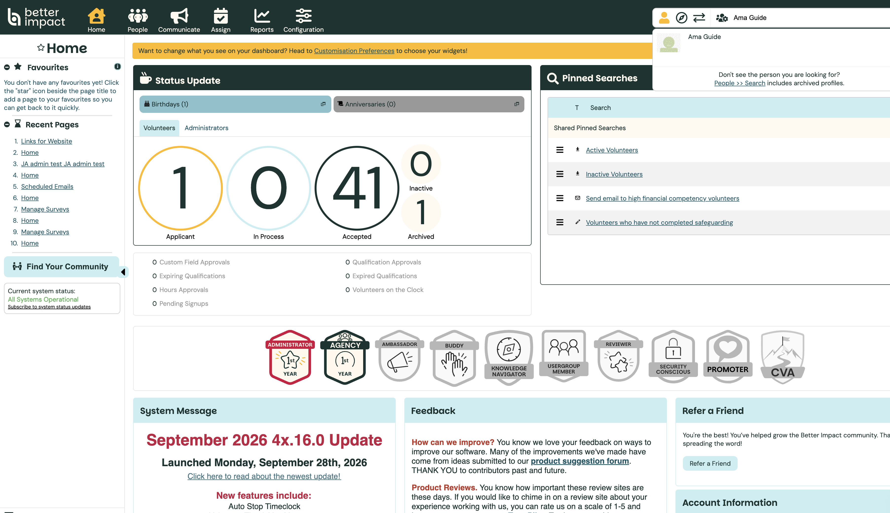
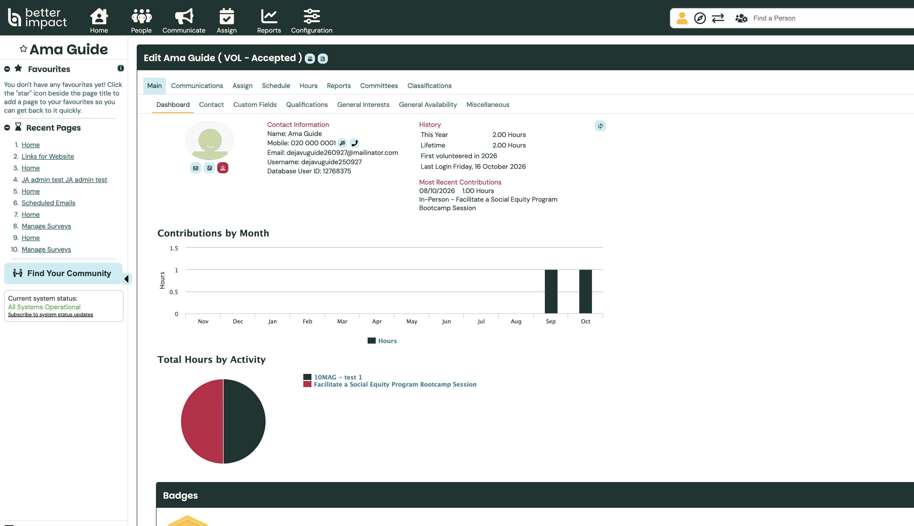
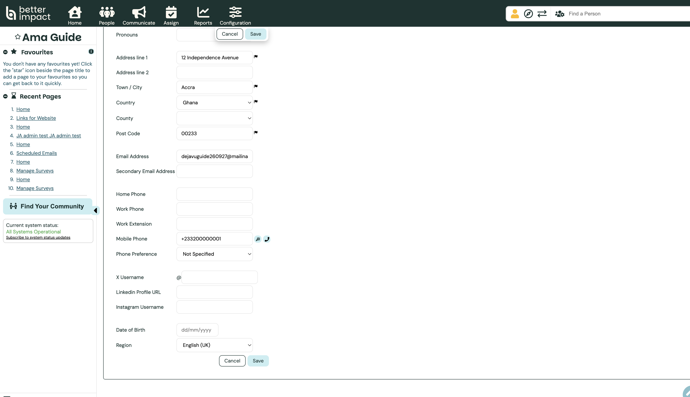
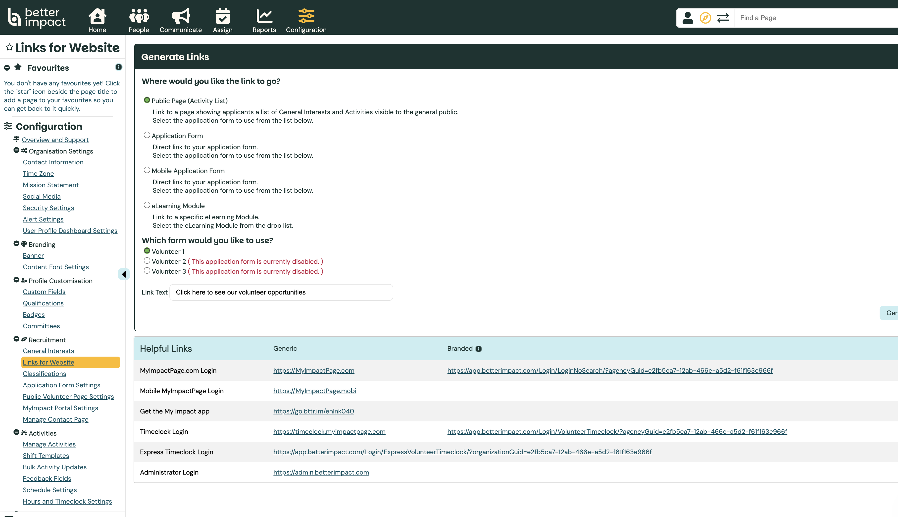
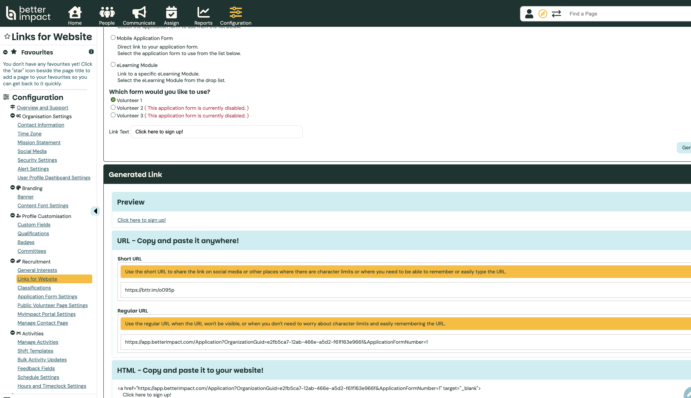

Admin guide
Audience · AdministratorInterface Language — Region Settings
Better Impact chooses language from (1) the browser, (2) the logged-in profile’s
Region setting (this wins when someone is logged in), or
(3) a forcelang parameter on public application links when nobody is logged in.
Region also controls date and time formats. Only system menus change — content you create
must be written in each language you want applicants to see.
You can set Region on your own profile, or on any volunteer or administrator profile.
Volunteers can also change their own Region; see
Change Your Interface Language.
Paths: My Profile → Edit My Profile → Contact → Region · Find a Person → Contact → Region · Configuration → Recruitment → Links for Website · Docs: Language considerations · User profiles (Region)
Open Edit My Profile
In the admin portal, click the green My Profile icon (top right), then Edit My Profile.

My Profile Edit My ProfileSteps 1–3 set your own admin interface language. To set language for a volunteer or another administrator, continue from step 4.
Open the Contact tab
On the edit profile screen, stay on Main and open the Contact sub-tab. Scroll to the bottom for Region.
Choose Region and Save
Select a Region (for DeJAVU, English (UK) is a common default: DD/MM/YYYY and 24-hour time). Options also include English (USA/Canada/Australia/NZ), Français (Canada), Español, and Português (Brasil or Portugal).
Click Save. If you changed your own profile, refresh the page so menus reload in the new language.

English (UK) SaveProfile Region overrides browser language when logged in Does not change how other users see the site
Find a volunteer or administrator
To change someone else’s language, use Find a Person (person icon, top right — or Alt/Option + P). Type their name. The same search finds both volunteers and administrators.

Find a PersonOpen their profile
Select the person from the dropdown results. Their profile opens (for example Edit Ama Guide). Volunteers show a VOL status; administrators open the same way from Find a Person.

Select person
ContactSet Region on their Contact tab
On Main → Contact, scroll to Region, choose the language and date format they need, then click Save. They see the new language the next time they refresh or log in.

Region SaveSame Region field for volunteers and other admins Does not change your own admin language
Prefer asking people to update their own Region when they can — especially other admins — so they choose the format they expect.
Public links — Links for Website
For applicants who are not logged in, you can start a page in a chosen language with a forced language URL. First generate the long application (or public page) URL: Configuration → Recruitment → Links for Website.

Links for WebsiteAdd forcelang to the long URL
Choose Application Form (or Public Page), pick the form, click Generate Link, and copy the Regular URL (long URL) — not the short URL.

Regular (long) URL
Append a forced language parameter. If the URL already has
?, use &forcelang=…; otherwise use
?forcelang=….
Codes:
fr-ca French ·
es Spanish ·
pt Portuguese ·
en-gb English (UK) ·
en-au English (Australia) ·
en-ca English (Canada)
Example:
…Application?OrganizationGuid=…&ApplicationFormNumber=1&forcelang=fr-ca.
Create a separate labelled link per language. Short URLs do not carry
forcelang. If you are logged into the admin portal, your profile
Region overrides forcelang — test in a private/incognito window
while logged out.